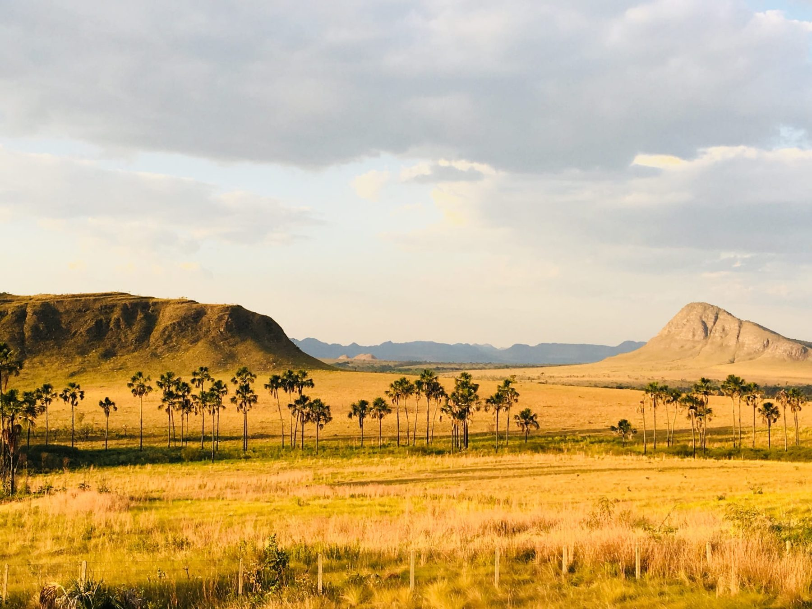

1 · A landscape with a legal seam through it
The Cerrado is the largest and most biodiverse tropical savanna on Earth, and it is where Brazilian agriculture was built. Embrapa's programme from the mid-1970s corrected soils that had been written off — pH near 4, aluminium toxicity, phosphorus locked into iron and aluminium oxides — through liming at industrial scale, phosphate loading, micronutrients, soybeans bred out of photoperiod sensitivity, and Rhizobium inoculation so thorough that Brazilian soy still runs on almost no nitrogen fertiliser. It is one of the great applied-science programmes of the twentieth century.
It is also how the savanna was converted. The Cerrado now carries roughly 60% of Brazilian agricultural output and 22% of global soybean exports [1]. Both sentences are true and neither cancels the other.
The legal seam matters more than the aesthetic one. Under the Forest Code, legal reserve requirements in the Amazon are far higher than in the Cerrado, so most Cerrado conversion is lawful. A compliance regime keyed to legality sees nothing here. And the active frontier is no longer the Amazon but Matopiba — Maranhão, Tocantins, Piauí, Bahia — the Cerrado's northern edge [1].
2 · Why environmental payments keep failing
The dominant instrument for paying to protect land is the avoided-deforestation credit: a buyer pays because a forest that would have been cleared was not. The payment is for a counterfactual.
Counterfactuals cannot be observed. They are constructed from a baseline, and the baseline is chosen by the party being paid. The consequences are documented rather than hypothetical — non-additionality, inflated baselines, leakage into neighbouring parcels, and permanence failures when a paid-for forest later burns. Investigations of major rainforest credit portfolios have found large fractions to be effectively phantom.
Tokenisation was then applied on top. Bridging credits onto public ledgers in 2021–22 produced a measured effect: demand concentrated in the oldest and lowest-quality credits, because the bridge could not discriminate on quality, and the registry moved to block it. That is a completed experiment on the same mechanism, not a prediction.
3 · The criterion
State it plainly, because everything else follows from it.
Avoided deforestation fails the criterion: the before-state is a forest that still stands, and the claim concerns a future that did not occur. Restoration of degraded ground satisfies it: bare, compacted, eroded or tailings-covered land is spectrally unambiguous, and the public satellite archive holds a dated record of it that predates any contract.
The criterion is not a preference. It partitions the space of environmental claims into those a third party can check and those they cannot, and it does so without reference to anyone's good faith.
| claim | before-state | verifiable? |
|---|---|---|
| avoided clearing of standing forest | counterfactual | no |
| restoration of degraded pasture | degraded pasture, dated in archive | yes |
| recovery of mining-degraded land | bare ground or tailings, dated | yes |
| plantation establishment on bare ground | bare ground, dated | yes |
| improved management, canopy unchanged | indistinguishable | no |
Applied to Brazil, the criterion selects a very large target. Degraded pasture runs to tens of millions of hectares, with federal policy already directed at converting it. Land degraded by mining carries, in addition, an existing legal recovery obligation — the PRAD, the degraded-area recovery plan — whose compliance nobody can currently verify at scale. That is an obligation without an instrument, which is a market.
4 · What the instrument can and cannot see
Detection is not symmetric, and the asymmetry is the design constraint.
Clearing is loud. Removal of standing biomass is a large, abrupt, high-contrast change. It is why deforestation monitoring works and why the Cerrado and Amazon frontiers are mapped in near-real time.
Establishment is quiet. A planted seedling is sub-pixel at 10 m and spectrally indistinguishable from grass or scrub for years. Against a forest background it is undetectable. Against bare or degraded ground it is not — contrast is the whole difference, which is a second reason the criterion selects the ground it does.
Two further signals do real work. Geometry: plantation and restoration planting is regular — rows, uniform spacing, single species, single age cohort — and regularity is detectable well before individual crowns are. Individual crowns: at sub-metre resolution, individual trees can be delineated at scale; a published count of roughly 1.8 billion trees across the West African Sahara and Sahel demonstrates the technique in drylands [2]. Sub-metre imagery is commercial and priced per square kilometre, which is an operating cost rather than an obstacle.
And in Amazonia specifically the binding constraint is cloud, not resolution. Optical sensors are unusable for much of the year; Sentinel-1 SAR penetrates cloud and is free.
5 · The claim must be re-derivable, not attested
A verification claim names an artifact. What was actually verified is a triple — artifact, method, inputs — and recording only the first is the defect analysed in WP73. The same structure applies here, with one advantage the software case does not have: the satellite archive is immutable and publicly addressable. A Sentinel or Landsat scene identifier names a specific, unchanging product that anyone can retrieve indefinitely. The input pin is free and strong.
inputs scene identifiers, listed explicitly (Sentinel-1/2, Landsat)
algorithm commit SHA of the classifier + container digest
parameters hash of the configuration
output sha256 of the result
checked-at ISO 8601
Verification is then not trust this record but re-derive and compare. Same inputs, same code, same configuration, same output — or the claim fails, and the failure names which of the arguments moved. Where third-party proof of when a claim was made is required, that is a timestamp — RFC 3161, or an anchored Merkle root — not a ledger of the claim itself.
6 · The mechanism
Given the criterion and the stamp, the payment instrument follows and is deliberately unexciting.
- Pay on observed state change, not on effort, promise, or counterfactual. The unit is a polygon whose before-state is archived and whose after-state is re-derivable.
- Pay the holder of the land. The verification cost must sit below the payment, which is the entire reason per-plot satellite MRV matters: field-visit verification costs more than a smallholder payment, so schemes that require it exclude the people they claim to serve.
- Stage the payment against canopy development, not against planting. Planting is cheap to claim and hard to see; canopy is the observable, and it arrives over years. This aligns payment with permanence rather than with intent.
- Use a results-based contract, in which a buyer pays on verified delivery. No instrument is issued, nothing appreciates, and nobody purchases an expectation.
The fourth point is where most of the safety lives, and it is worth being explicit about the design that was rejected to arrive at it.
7 · Why not a token
A token whose supply contracts as trees are planted, collateralised by the trees, was considered during drafting and is recorded here as rejected, with reasons, because a design abandoned silently is a design that returns.
- The oracle problem is untouched. A ledger makes a claim immutable; it does nothing about whether the claim was true when written. A false classification written to a chain is a permanently immutable false classification with a cryptographic guarantee attached — which is the exact structure of the verification failure catalogued in WP73, with better marketing.
- A supply schedule constrains quantity, not value. The most rigid supply schedule ever built belongs to an asset whose price moves by most of its value in a year. Price is what buyers will pay. Nothing about a burn rate compels anyone to buy, and asserting that geometry forces value is a claim of necessity where there is a mechanism at best.
- “Collateral” is a legal term with requirements. Collateral must be seizable and enforceable on default. A standing tree on someone else's land in another jurisdiction is none of those things to a distant holder. If the instrument is redeemable against it, the asset cannot be repossessed; if it is not, the word is a metaphor.
- Timber value and permanence are in direct conflict. A hardwood's value grows with diameter because timber value scales with volume — and is realised by felling. A growing timber asset and a permanent sink are different products. A design must choose.
- And an instrument sold on the representation that its value will rise through the efforts of its promoters is an investment contract, however good the satellite verification behind it. This is a securities question before it is a technical one.
8 · What this paper does not establish
- It presents no data. No polygon has been classified, no accuracy assessed, no cost per hectare estimated. Everything here is design.
- It does not demonstrate that satellite-derived restoration verification meets any registry's or regulator's evidentiary standard. It argues that it can be re-derived, which is a different and weaker claim than is accepted.
- It does not establish the EUDR savanna gap, the degraded-pasture area, the federal conversion programme, or the PRAD obligation from primary sources. Each is flagged where it appears.
- It offers no legal or financial advice, and §7 is a record of reasoning rather than a securities opinion.
- The land-sparing claim — that a recovered hectare is a hectare not cleared in Matopiba — is asserted, not shown. Restoration and frontier expansion are not obviously substitutes, and demonstrating substitution requires the kind of identification strategy set out in WP72, not an appeal to plausibility.
9 · Provenance
This paper was assembled in a single working session on 22 August 2026, from an exchange in which several stronger-sounding versions of its argument were proposed and discarded. The sequence is recorded because the discarded versions were the more attractive ones.
- A scheme to reforest cleared Amazon was set aside on detection grounds: establishment against a forest background is not observable at the moment payment would fall due.
- A scheme to green dune fields in Maranhão was set aside because the site is a national park and World Heritage area, and more instructively because the seasonal lagoons that make it look plantable are produced by the dunes being bare and mobile. Vegetation would end the hydrology used to justify it.
- A token design was set aside for the reasons in §7.
- The claim that geometry forces asset value was withdrawn, being the same overreach as a dominance claim corrected in WP74 the previous day: a necessity asserted where a mechanism was available.
CS/ROUTINE.md in this repository, applied to a design rather than to a proof: write the exposition early, treat disagreement between the prose and the object as a defect, and record what was discarded so the discarded version does not return wearing different words.References
[1] S. Dutra e Silva, Lessons from the Brazilian Cerrado: Technological Achievement and Environmental Challenges, ReVista, David Rockefeller Center for Latin American Studies, Harvard University, 13 September 2025.
[2] M. Brandt et al., An unexpectedly large count of trees in the West African Sahara and Sahel, Nature 587, 2020.
[3] G. S. Rodrigues, C. C. A. Buschinelli, A. F. D. Avila, An Environmental Impact Assessment System for Agricultural R&D II: Institutional Learning Experience at Embrapa, Journal of Technology Management and Innovation.
[4] Regulation (EU) 2023/1115 on deforestation-free products, as amended; application date for large operators deferred to 30 December 2026.